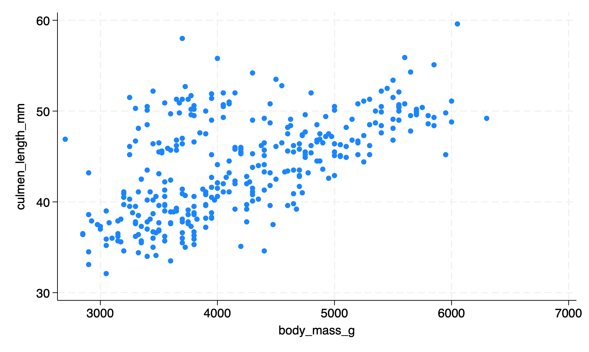

Workflow
1 Introduction
I have increasingly been thinking about the idea of workflow in data science / data analysis work.
So many workflows follow the same conceptual pattern.
2 Visually and Conceptually
3 Characteristics of Good Workflows
Increasingly, we want to think about workflows that are
- documentable, transparent, and auditable: We have a record of what we did if we want to double check our work, clarify a result, or develop a new project with a similar process. We, or others, can find the inevitable errors in our work, and correct them.
- replicable: Others can replicate our findings with the same or new data.
- scalable: We are developing a process that can be as easily used with thousands or millions of rows of data as it can with ten rows of data. We are developing a process that can be easily repeated if we are constantly getting new or updated data, e.g. getting new data every week, or every month.
4 Complex Workflows
For complex workflows, we will often want to write a script.
The more graphs or calculations I have to make, the more complex the project, the more the desires of the client are likely to change, the more frequently the data is being updated, and the more mission critical the results (i.e. I need auditability and error correction) the more likely I am to use a scripting tool like Stata or R.
| Simple Process: Single Graph or Calculation | Complex Process: Multiple Graphs or Calculations. | |
|---|---|---|
| Process Run Only Once | Spreadsheet: Excel or Google | Scripting Tool: Stata or R |
| Process Run Multiple Times (Perhaps As Data Are Regularly Updated) | Scripting Tool: Stata or R | Scripting Tool: Stata or R |
Always (or usually) beginning with the raw data, and then writing and running a script that generates our results allows us to develop a process that is documentable, auditable, replicable and scalable.
Related to this issue is the idea that it is usually best to store quantitative data in a statistical format such as SPSS or Stata. Spreadsheets are likely to be a bad tool for storing quantitative data.
5 Example
Below is an example that uses the Palmer Penguins data set.
The example below is in Stata, due to Stata’s ease of readability, but could as easily be written in any other language that has scripting, such as SPSS, SAS, R, or Julia.
* Learning About Penguins
* Ask A Question
* What can I learn about penguins?
* Open The Raw Data
use "https://github.com/agrogan1/Stata/raw/main/do-files/penguins.dta", clear
* Clean and Wrangle Data
generate big_penguin = body_mass_g > 4000 // create a big penguin variable
* Descriptive Statistics
summarize culmen_length_mm culmen_depth_mm flipper_length_mm body_mass_g
tabulate big_penguin
tabulate species Variable | Obs Mean Std. dev. Min Max
-------------+---------------------------------------------------------
culmen_len~m | 342 43.92193 5.459584 32.1 59.6
culmen_dep~m | 342 17.15117 1.974793 13.1 21.5
flipper_le~m | 342 200.9152 14.06171 172 231
body_mass_g | 342 4201.754 801.9545 2700 6300
big_penguin | Freq. Percent Cum.
------------+-----------------------------------
0 | 170 49.42 49.42
1 | 174 50.58 100.00
------------+-----------------------------------
Total | 344 100.00
species | Freq. Percent Cum.
------------+-----------------------------------
Adelie | 152 44.19 44.19
Chinstrap | 68 19.77 63.95
Gentoo | 124 36.05 100.00
------------+-----------------------------------
Total | 344 100.00

* Visualize The Data
graph bar body_mass_g, over(species) scheme(s1color) // bar graph
quietly graph export "mybargraph.png", replace
twoway scatter culmen_length_mm body_mass_g, scheme(s1color) // scatterplot
quietly graph export "myscatterplot.png", replace
* Analyze
regress culmen_length_mm body_mass_g // regress culmen length on body mass Source | SS df MS Number of obs = 342
-------------+---------------------------------- F(1, 340) = 186.44
Model | 3599.71136 1 3599.71136 Prob > F = 0.0000
Residual | 6564.49417 340 19.3073358 R-squared = 0.3542
-------------+---------------------------------- Adj R-squared = 0.3523
Total | 10164.2055 341 29.8070543 Root MSE = 4.394
------------------------------------------------------------------------------
culmen_len~m | Coefficient Std. err. t P>|t| [95% conf. interval]
-------------+----------------------------------------------------------------
body_mass_g | .0040514 .0002967 13.65 0.000 .0034678 .004635
_cons | 26.89887 1.269148 21.19 0.000 24.4025 29.39524
------------------------------------------------------------------------------